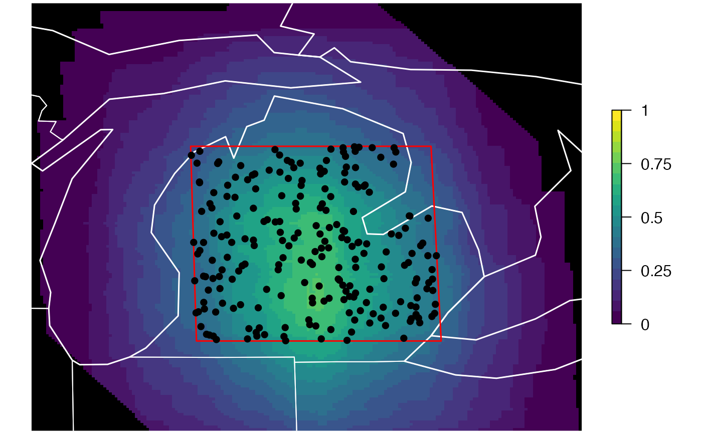

eBird Status and Trends divides space and time into variably sized "stixels" within which individual base models are fit. The process of stixelization is performed many times and the prediction at any given point is the median of the predictions from all the stixels that that point falls in. For a given spatiotemporal extent, this function identifies the set of stixels whose centroids fall within that extent and calculates the spatial footprint of these stixels, i.e. a surface indicating the proportion of the selected stixels that contribute information to model estimates at each location. This footprint gives an estimate of where the information for the model predictions, predictor importances (PIs), and partial dependencies (PDs) come from.
stixel_footprint(path, ext)
# S3 method for stixel_footprint
plot(x, ...)| path | character; full path to directory containing the eBird Status and Trends products for a single species. |
|---|---|
| ext | ebirdst_extent object; the spatiotemporal extent to filter the data to. |
| x | stixel_footprint object to map. |
| ... | ignored. |
A stixel_footprint object consisting of a list with three elements:
footprint: a RasterStack giving the percentage of the selected
stixels that are contributing to each grid cell.
centroids: an sf object containing the stixel centroids points.
extent: an ebirdst_extent object specifying the chosen spatiotemporal
extent.
The stixel footprint can be mapped by calling plot() on the returned
stixel_footprint object.
# \donttest{
# download example data
path <- ebirdst_download("example_data")
#> Data already exists, use force = TRUE to re-download.
# or get the path if you already have the data downloaded
path <- get_species_path("example_data")
# define a spatiotemporal extent
bb_vec <- c(xmin = -86, xmax = -83, ymin = 42, ymax = 45)
e <- ebirdst_extent(bb_vec, t = c("05-01", "05-31"))
# calculate effective extent map
footprint <- stixel_footprint(path, ext = e)
plot(footprint)

# }